Enter with Wonder. Leave with Agency.

Before the lesson
进入
ORBIT
学习轨道
第四课 · 看见不存在的东西
写得像真的，
就是真的吗？
2023 年，纽约。
一位律师把 AI 给出的案例
写进了法律文件。
有名字，有年份，也有编号。
一份看起来很专业的答案，
还需要检查什么？
参考案例
案件名称
引用编号
判决摘要
待核实幻觉
Hallucination
AI 生成了看起来可信，
实际却缺少事实依据
或不正确的内容。
说得清楚、说得肯定，
并不能证明是真的。
AI 会编，人也会误信。
AI 的幻觉
把不存在的事实，
说得像真的。
人的“幻觉”
把看起来可靠，
当成已经核实。
一个很会说，一个太容易相信。
这里人的“幻觉”是比喻，指使用 AI 时的误判与过度自信。
上下文 Context
AI 这次回答能参考的对话和资料。
更早的细节
可能已不在
这次参考范围里
这次能参考的内容
你的问题
对话内容
提供的资料
内容太长时，早先的细节可能不再被直接参考。
信息不够，AI 却仍可能给出一个错误答案。
上下文有限只是幻觉的一种原因；示意图不代表固定容量。
更肯定，
不等于
证据更多。
AI 有时会顺着提问者说。
被赞同的感觉，
不能代替核对事实。
“对，
您说得对。”
问出处，也打开原文看看。
重要的信息，换个来源核对。
允许回答是“还不知道”。
这一次做好了，然后呢？
作品做出来了≠我已经会做了
这一次成功了≠每次都能成功
提出要求、判断结果、
发现问题，再把它改好。
可以慢慢长在自己身上。
为什么我们
不喜欢
“AI 感”？
一张图，一段话。
什么让你觉得“像 AI”？
这种感觉，从哪里来？
AI感
课外作业 · After Class
找找身边的
「AI 感」
- 找几个生活中的例子一张海报、一段视频、一篇文章……你在哪里遇见过？
- 说说哪里有「AI 感」是画面、声音、用词，还是某种说不出的感觉？
- 聊聊你的感受也可以问问其他人：喜欢、不喜欢，还是没什么感觉？
我的「AI 感」发现
在哪里看到？
哪里让我觉得像 AI？
我的感受 / 其他人的感受
ORBIT